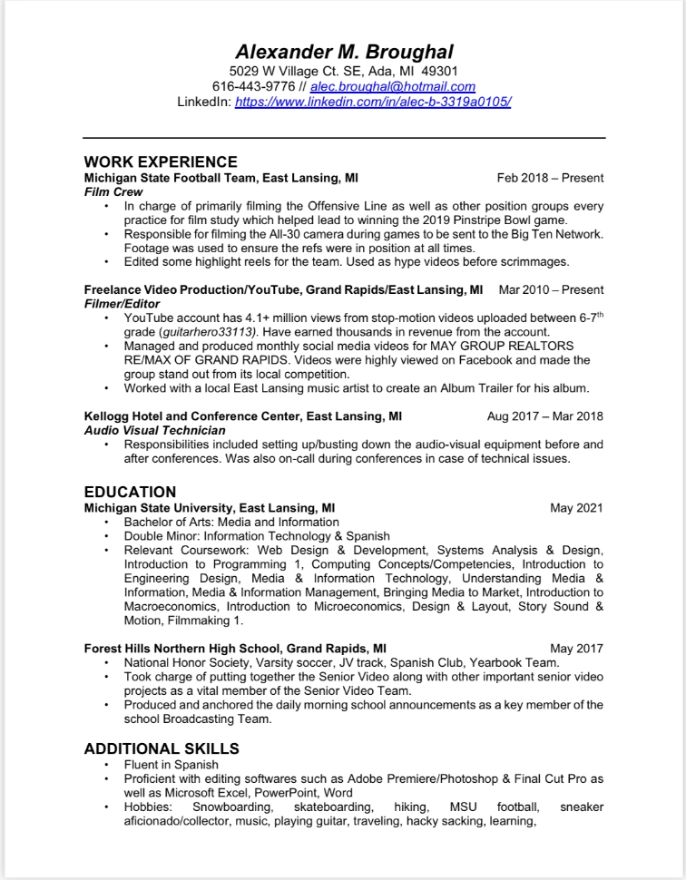

Since getting my first job at MC Sports in February of my junior year of high school, I've worked at over ten different jobs. These jobs have been of all different types, from working in a grocery market to a fast food store to a professional sports team filmer, I've got a lot of unique experiences under my belt, so I'll go over a few that aren't listed on the resume.
Portrait Studio Photographer -
Little Caesers - I spent one of my summers a few years ago working at a Little Caesars near my house. I worked there with one of my good friends too. It was a lot of fun. I mainly worked at the bread stick station and would occasionally help out at the register. I
Grocery Market -
Amway Factory -
MC Sports - This was the first job I ever had. I was a sales associate in the footwear department and I absolutely loved it. I'm a big sneakerhead, so working with what seemed to be an endless wall of shoes was perfect for me. I knew a lot about shoes too so I was able to help customers with questions they had. This being the first job I ever had, I really learned how to show up to a place precisely on time and in uniform. I also played sports, so I learned how to balance a work, school, and sports schedule from an early point./p>
Below you'll find an uploaded image of my current resume. You'll find work experience, education, as well as additional skills and hobbies. The link to my LinkedIn account doesn't work on the resume itself. This link does work:
